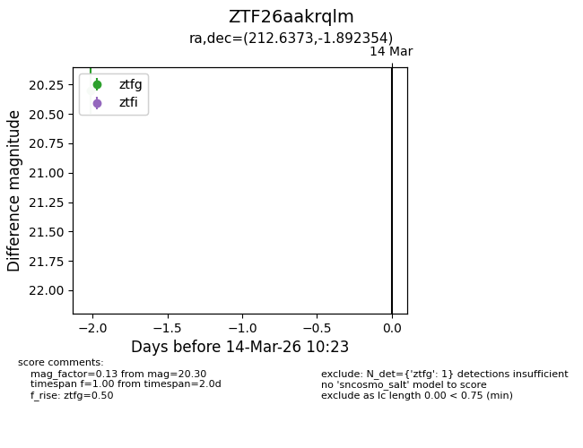
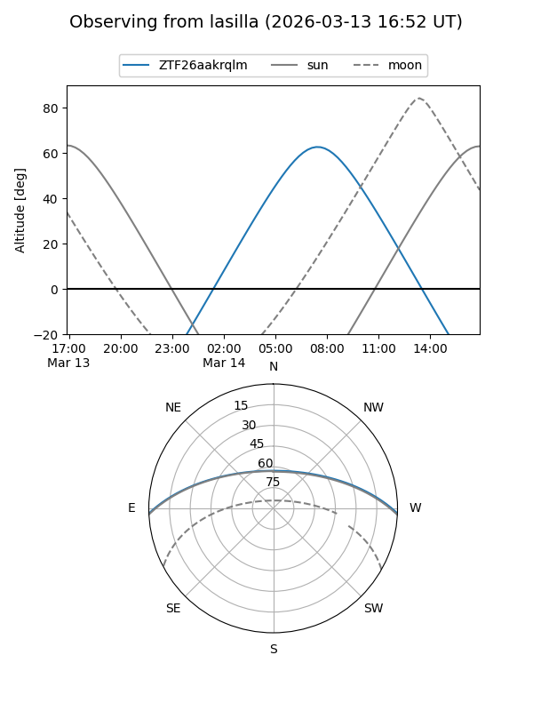
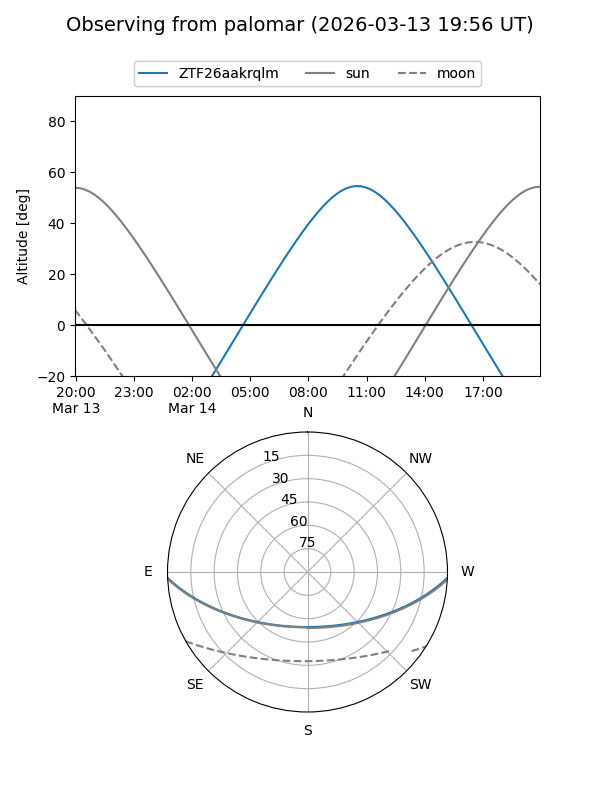

ZTF26aakrqlm
Target ZTF26aakrqlm at 2026-03-14 10:25
Aliases and brokers:
FINK: link
Lasair: link
ALeRCE: link
alt names
ZTF26aakrqlm (ztf,fink_ztf)
Coordinates:
equatorial (ra, dec) = 212.6373,-1.89235
equatorial (HMS+DMS) = 14:10:32.96,-01:53:32.47
galactic (l, b) = (339.3599,+55.28300)
Flags:
Photometry:
last ztfg=20.30
1 ztfg detections
Lightcurve

Visibility


Additional plots